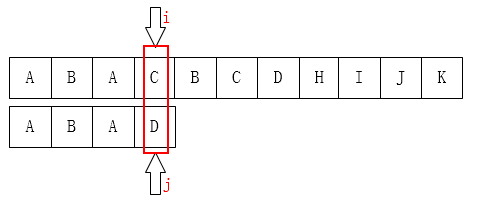
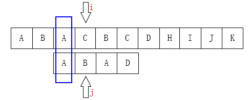

（原创）详解KMP算法
KMP算法应该是每一本《数据结构》书都会讲的，算是知名度最高的算法之一了，但很可惜，我大二那年压根就没看懂过~~~
之后也在很多地方也都经常看到讲解KMP算法的文章，看久了好像也知道是怎么一回事，但总感觉有些地方自己还是没有完全懂明白。这两天花了点时间总结一下，有点小体会，我希望可以通过我自己的语言来把这个算法的一些细节梳理清楚，也算是考验一下自己有真正理解这个算法。
什么是KMP算法：
KMP是三位大牛：D.E.Knuth、J.H.Morris和V.R.Pratt同时发现的。其中第一位就是《计算机程序设计艺术》的作者！！
KMP算法要解决的问题就是在字符串（也叫主串）中的模式（pattern）定位问题。说简单点就是我们平时常说的关键字搜索。模式串就是关键字（接下来称它为P），如果它在一个主串（接下来称为T）中出现，就返回它的具体位置，否则返回-1（常用手段）。

首先，对于这个问题有一个很单纯的想法：从左到右一个个匹配，如果这个过程中有某个字符不匹配，就跳回去，将模式串向右移动一位。这有什么难的？
我们可以这样初始化：

之后我们只需要比较i指针指向的字符和j指针指向的字符是否一致。如果一致就都向后移动，如果不一致，如下图：

A和E不相等，那就把i指针移回第1位（假设下标从0开始），j移动到模式串的第0位，然后又重新开始这个步骤：

基于这个想法我们可以得到以下的程序：

1 /** 2 3 * 暴力破解法 4 5 * @param ts 主串 6 7 * @param ps 模式串 8 9 * @return 如果找到，返回在主串中第一个字符出现的下标，否则为-1 10 11 */ 12 13 public static int bf(String ts, String ps) { 14 15 char[] t = ts.toCharArray(); 16 17 char[] p = ps.toCharArray(); 18 19 int i = 0; // 主串的位置 20 21 int j = 0; // 模式串的位置 22 23 while (i < t.length && j < p.length) { 24 25 if (t[i] == p[j]) { // 当两个字符相同，就比较下一个 26 27 i++; 28 29 j++; 30 31 } else { 32 33 i = i - j + 1; // 一旦不匹配，i后退 34 35 j = 0; // j归0 36 37 } 38 39 } 40 41 if (j == p.length) { 42 43 return i - j; 44 45 } else { 46 47 return -1; 48 49 } 50 51 }
上面的程序是没有问题的，但不够好！（想起我高中时候数字老师的一句话：我不能说你错，只能说你不对~~~）
如果是人为来寻找的话，肯定不会再把i移动回第1位，因为主串匹配失败的位置前面除了第一个A之外再也没有A了，我们为什么能知道主串前面只有一个A？因为我们已经知道前面三个字符都是匹配的！（这很重要）。移动过去肯定也是不匹配的！有一个想法，i可以不动，我们只需要移动j即可，如下图：

上面的这种情况还是比较理想的情况，我们最多也就多比较了再次。但假如是在主串“SSSSSSSSSSSSSA”中查找“SSSSB”，比较到最后一个才知道不匹配，然后i回溯，这个的效率是显然是最低的。
大牛们是无法忍受“暴力破解”这种低效的手段的，于是他们三个研究出了KMP算法。其思想就如同我们上边所看到的一样：“利用已经部分匹配这个有效信息，保持i指针不回溯，通过修改j指针，让模式串尽量地移动到有效的位置。”
所以，整个KMP的重点就在于当某一个字符与主串不匹配时，我们应该知道j指针要移动到哪？
接下来我们自己来发现j的移动规律：

如图：C和D不匹配了，我们要把j移动到哪？显然是第1位。为什么？因为前面有一个A相同啊：

如下图也是一样的情况：

可以把j指针移动到第2位，因为前面有两个字母是一样的：

至此我们可以大概看出一点端倪，当匹配失败时，j要移动的下一个位置k。存在着这样的性质：最前面的k个字符和j之前的最后k个字符是一样的。
如果用数学公式来表示是这样的
P[0 ~ k-1] == P[j-k ~ j-1]
这个相当重要，如果觉得不好记的话，可以通过下图来理解：

弄明白了这个就应该可能明白为什么可以直接将j移动到k位置了。
因为:
当T[i] != P[j]时
有T[i-j ~ i-1] == P[0 ~ j-1]
由P[0 ~ k-1] == P[j-k ~ j-1]
必然：T[i-k ~ i-1] == P[0 ~ k-1]
公式很无聊，能看明白就行了，不需要记住。
这一段只是为了证明我们为什么可以直接将j移动到k而无须再比较前面的k个字符。
好，接下来就是重点了，怎么求这个（这些）k呢？因为在P的每一个位置都可能发生不匹配，也就是说我们要计算每一个位置j对应的k，所以用一个数组next来保存，next[j] = k，表示当T[i] != P[j]时，j指针的下一个位置。
很多教材或博文在这个地方都是讲得比较含糊或是根本就一笔带过，甚至就是贴一段代码上来，为什么是这样求？怎么可以这样求？根本就没有说清楚。而这里恰恰是整个算法最关键的地方。
1 public static int[] getNext(String ps) { 2 3 char[] p = ps.toCharArray(); 4 5 int[] next = new int[p.length]; 6 7 next[0] = -1; 8 9 int j = 0; 10 11 int k = -1; 12 13 while (j < p.length - 1) { 14 15 if (k == -1 || p[j] == p[k]) { 16 17 next[++j] = ++k; 18 19 } else { 20 21 k = next[k]; 22 23 } 24 25 } 26 27 return next; 28 29 }
这个版本的求next数组的算法应该是流传最广泛的，代码是很简洁。可是真的很让人摸不到头脑，它这样计算的依据到底是什么？
好，先把这个放一边，我们自己来推导思路，现在要始终记住一点，next[j]的值（也就是k）表示，当P[j] != T[i]时，j指针的下一步移动位置。
先来看第一个：当j为0时，如果这时候不匹配，怎么办？

像上图这种情况，j已经在最左边了，不可能再移动了，这时候要应该是i指针后移。所以在代码中才会有next[0] = -1;这个初始化。
如果是当j为1的时候呢？

显然，j指针一定是后移到0位置的。因为它前面也就只有这一个位置了~~~
下面这个是最重要的，请看如下图：


请仔细对比这两个图。
我们发现一个规律：
当P[k] == P[j]时，
有next[j+1] == next[j] + 1
其实这个是可以证明的：
因为在P[j]之前已经有P[0 ~ k-1] == p[j-k ~ j-1]。（next[j] == k）
这时候现有P[k] == P[j]，我们是不是可以得到P[0 ~ k-1] + P[k] == p[j-k ~ j-1] + P[j]。
即：P[0 ~ k] == P[j-k ~ j]，即next[j+1] == k + 1 == next[j] + 1。
这里的公式不是很好懂，还是看图会容易理解些。
那如果P[k] != P[j]呢？比如下图所示：

像这种情况，如果你从代码上看应该是这一句：k = next[k];为什么是这样子？你看下面应该就明白了。

现在你应该知道为什么要k = next[k]了吧！像上边的例子，我们已经不可能找到[ A，B，A，B ]这个最长的后缀串了，但我们还是可能找到[ A，B ]、[ B ]这样的前缀串的。所以这个过程像不像在定位[ A，B，A，C ]这个串，当C和主串不一样了（也就是k位置不一样了），那当然是把指针移动到next[k]啦。
有了next数组之后就一切好办了，我们可以动手写KMP算法了：
1 public static int KMP(String ts, String ps) { 2 3 char[] t = ts.toCharArray(); 4 5 char[] p = ps.toCharArray(); 6 7 int i = 0; // 主串的位置 8 9 int j = 0; // 模式串的位置 10 11 int[] next = getNext(ps); 12 13 while (i < t.length && j < p.length) { 14 15 if (j == -1 || t[i] == p[j]) { // 当j为-1时，要移动的是i，当然j也要归0 16 17 i++; 18 19 j++; 20 21 } else { 22 23 // i不需要回溯了 24 25 // i = i - j + 1; 26 27 j = next[j]; // j回到指定位置 28 29 } 30 31 } 32 33 if (j == p.length) { 34 35 return i - j; 36 37 } else { 38 39 return -1; 40 41 } 42 43 }
和暴力破解相比，就改动了4个地方。其中最主要的一点就是，i不需要回溯了。
最后，来看一下上边的算法存在的缺陷。来看第一个例子：

显然，当我们上边的算法得到的next数组应该是[ -1，0，0，1 ]
所以下一步我们应该是把j移动到第1个元素咯：
不难发现，这一步是完全没有意义的。因为后面的B已经不匹配了，那前面的B也一定是不匹配的，同样的情况其实还发生在第2个元素A上。
显然，发生问题的原因在于P[j] == P[next[j]]。
所以我们也只需要添加一个判断条件即可：
public static int[] getNext(String ps) { char[] p = ps.toCharArray(); int[] next = new int[p.length]; next[0] = -1; int j = 0; int k = -1; while (j < p.length - 1) { if (k == -1 || p[j] == p[k]) { if (p[++j] == p[++k]) { // 当两个字符相等时要跳过 next[j] = next[k]; } else { next[j] = k; } } else { k = next[k]; } } return next; }
好了，至此。KMP算法也结束了。
很奇怪，好像不是很难的东西怎么就把我困住这么久呢？
仔细想想还是因为自己太浮躁了，以前总是草草应付，很多细节都没弄清楚，就以为自己懂了。结果就只能是似懂非懂的。要学东西真的需要静下心来。


这个大概是怎么得出来的。从图片上我暂时还没看出来。特次请教一下。